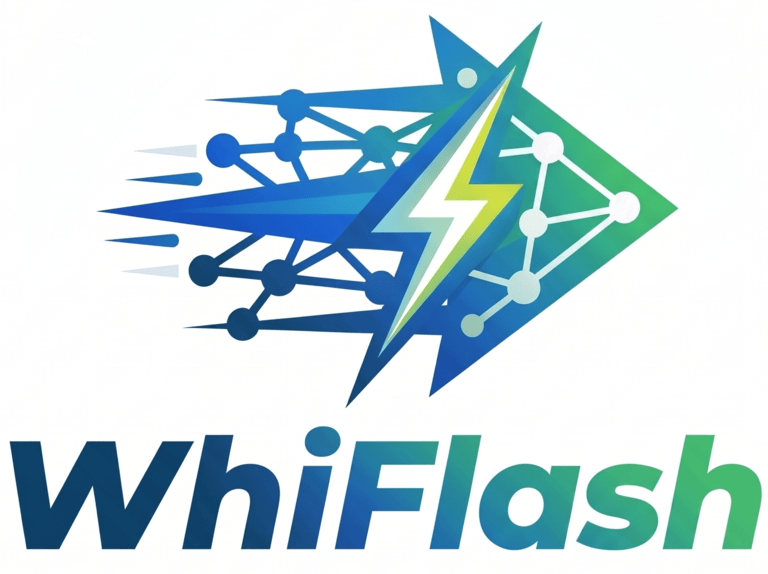
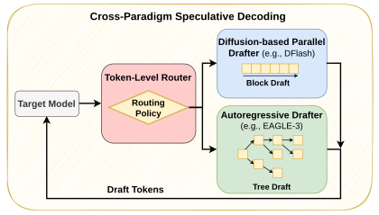
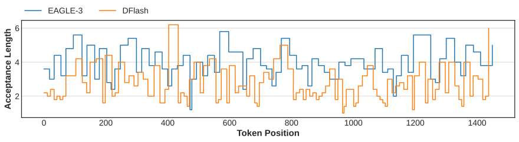

EMNLP 2026
WhiFlash is the first cross-paradigm speculative decoding method: a lightweight token-level router that, at every decoding step, dynamically chooses between an autoregressive drafter (EAGLE-3) and a diffusion-based parallel drafter (DFlash). By capitalising on the complementary strengths of these fundamentally distinct drafting architectures, WhiFlash reaches higher acceptance lengths than either standalone drafter, yielding throughput gains of up to 69.6% over EAGLE-3 and 37.3% over DFlash.

State-of-the-art speculative decoding relies on static drafting paradigms: autoregressive (AR) drafters excel at open-ended chat and reasoning, while diffusion-based parallel drafters dominate highly structured outputs such as math and coding. We empirically find that the better paradigm changes within a single sequence — drafting accuracy fluctuates aggressively from token to token, and coarse-grained, task-level routing leaves unrealised speedups.

WhiFlash addresses this volatility with a fine-grained controller that routes each decoding step to the highest-performing drafter at run time, using either a lightweight entropy-based or a learned neural router.
At each speculation round, the target model produces the next-token distribution and hidden states. A token-level router takes these features as inputs and selects which drafter to run next:
We develop two system optimisations to reduce the cost of switching between drafters, leading to the higher speedup:
Together, these keep the switching overhead below 7% of per-round latency.
WhiFlash-Neural's per-category throughput gain over each standalone drafter, based on NVIDIA H100 GPU.
| Category | Qwen3-4B | Qwen3-8B | ||
|---|---|---|---|---|
| vs. EAGLE-3 | vs. DFlash | vs. EAGLE-3 | vs. DFlash | |
| Chat | +7.8% | +33.7% | +7.0% | +37.3% |
| Math | +69.6% | +4.8% | +69.3% | +1.3% |
| Coding | +63.4% | +6.5% | +61.0% | +5.2% |
| Agentic | +19.9% | +3.4% | +16.8% | +6.1% |
📄 Full results of acceptance length and speedup tables for all models are in the paper.
DDTree was added after the paper. It is a stronger
diffusion baseline than DFlash: same draft model, but candidates are verified as a tree rather than a
linear block. Speedup over plain autoregressive decoding of every standalone drafter and
of WhiFlash-Neural with each
drafter pair
(df = DFlash, ddt = DDTree, e3 = EAGLE-3, bN = DDTree
tree budget N):
| Model | Method | Chat | Math | Coding | Agentic | Avg. |
|---|---|---|---|---|---|---|
| Qwen3-4B | EAGLE-3 | 2.66× | 2.97× | 2.89× | 2.13× | 2.66× |
| DFlash | 2.11× | 5.04× | 4.49× | 2.31× | 3.48× | |
| DDTree (b32) | 2.77× | 5.70× | 5.45× | 2.95× | 4.22× | |
| DDTree (b128) | 3.18× | 6.42× | 5.99× | 3.25× | 4.71× | |
| WhiFlash-Neural (df-e3) | 2.83× | 5.11× | 4.52× | 2.45× | 3.73× | |
| WhiFlash-Neural (ddt-e3-b32) | 3.03× | 5.98× | 5.58× | 2.99× | 4.40× | |
| WhiFlash-Neural (ddt-e3-b128) | 3.33× | 6.59× | 6.24× | 3.26× | 4.86× | |
| Qwen3-8B | EAGLE-3 | 2.69× | 3.09× | 2.88× | 2.38× | 2.76× |
| DFlash | 2.04× | 5.14× | 4.46× | 2.60× | 3.56× | |
| DDTree (b32) | 2.74× | 5.75× | 5.46× | 3.36× | 4.33× | |
| DDTree (b128) | 3.05× | 6.56× | 6.12× | 3.58× | 4.83× | |
| WhiFlash-Neural (df-e3) | 2.85× | 5.04× | 4.52× | 2.73× | 3.79× | |
| WhiFlash-Neural (ddt-e3-b32) | 3.06× | 5.94× | 5.47× | 3.37× | 4.46× | |
| WhiFlash-Neural (ddt-e3-b128) | 3.27× | 6.62× | 6.10× | 3.71× | 4.93× |
Note: These results with DDTree are preliminary and come from a separate run; they are not comparable cell-to-cell with the paper's tables.
@misc{kwon2026whiflash,
title={{WhiFlash: Accelerating Speculative Decoding with Token-Level Cross-Paradigm Routing}},
author={Young D. Kwon and Miles Williams and Rui Li and Alexandros Kouris and Stylianos I. Venieris},
year={2026},
eprint={2606.07710},
archivePrefix={arXiv},
primaryClass={cs.LG},
url={https://arxiv.org/abs/2606.07710},
}